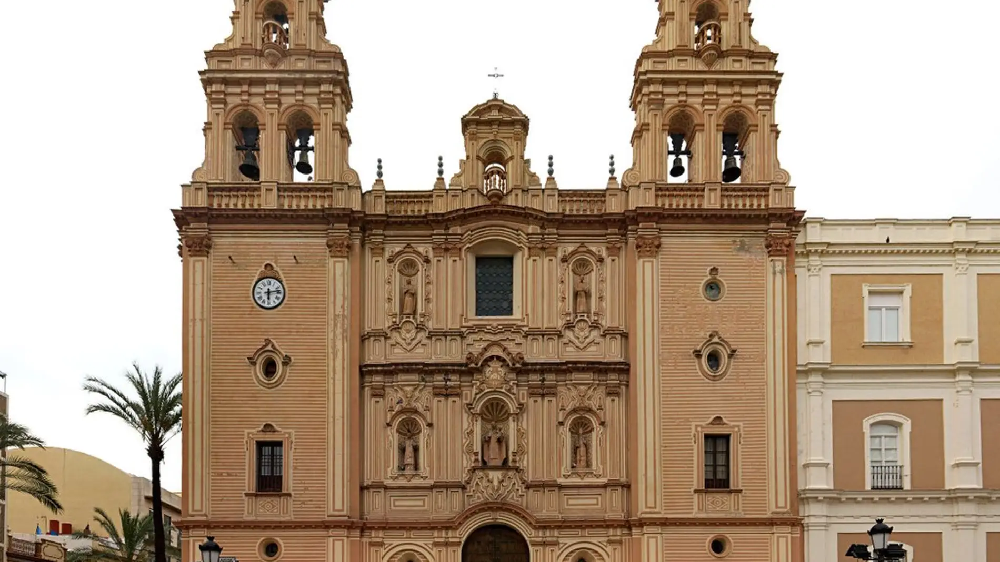

Visitar Babahoyo es descubrir una ciudad que te recibe con los brazos abiertos, donde la tradición y la naturaleza se unen para ofrecer experiencias únicas. Desde sus ríos tranquilos hasta sus parques llenos de vida, cada rincón de esta capital fluvial guarda algo especial para sus visitantes. Caminar por sus calles, disfrutar de su gastronomía, conocer su historia y compartir con su gente amable hacen de Babahoyo un destino que sorprende y enamora. No es solo un lugar de paso, es una ciudad para vivirla, para sentirla, y para recordarla con cariño.
Catedral de Nuestra Señora de la Merced
Parque Central 24 de Mayo
Malecón de Babahoyo
Museo Municipal de Babahoyo
Isla del Amor

Puerto Pechiche